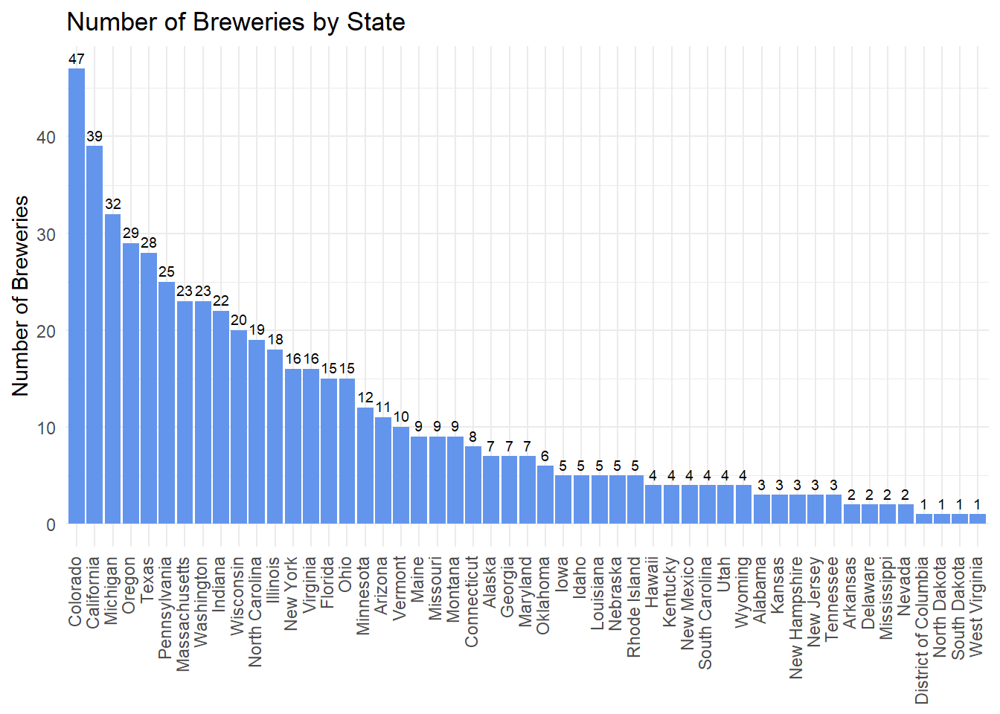
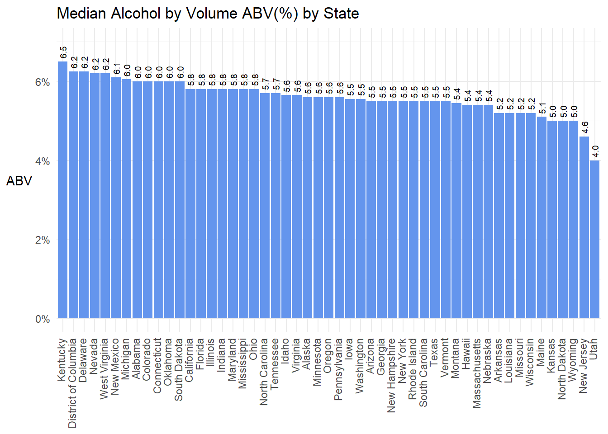
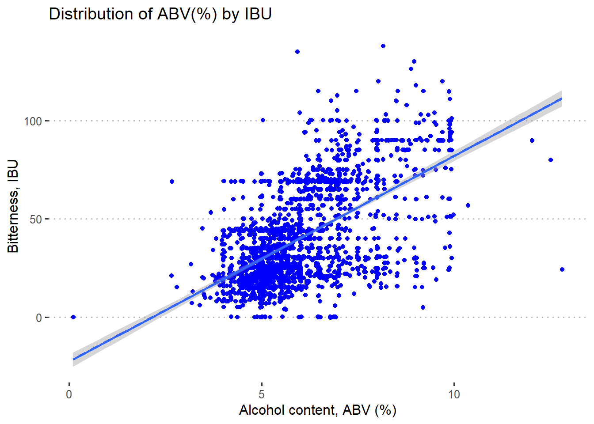
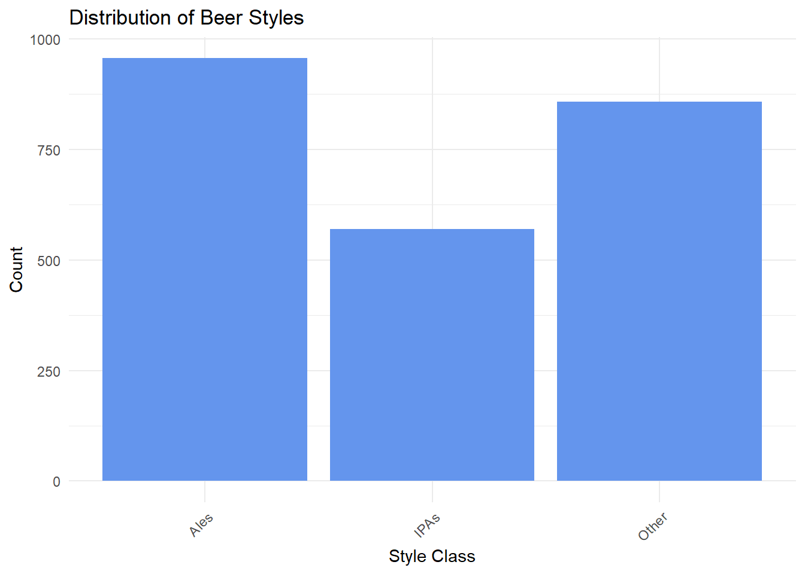
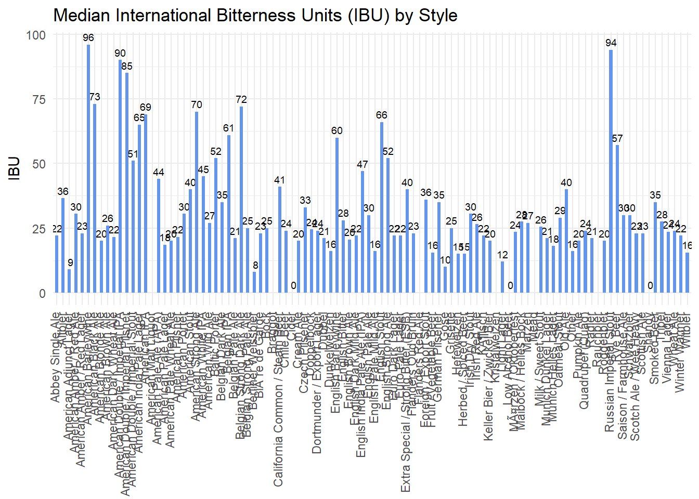
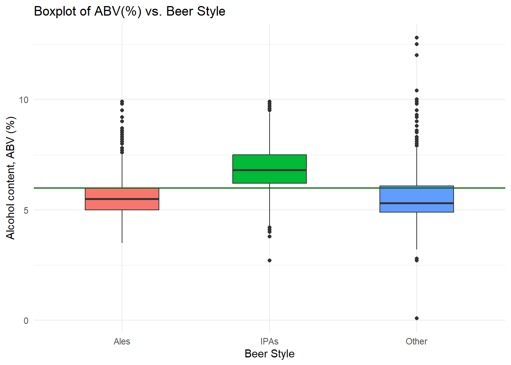
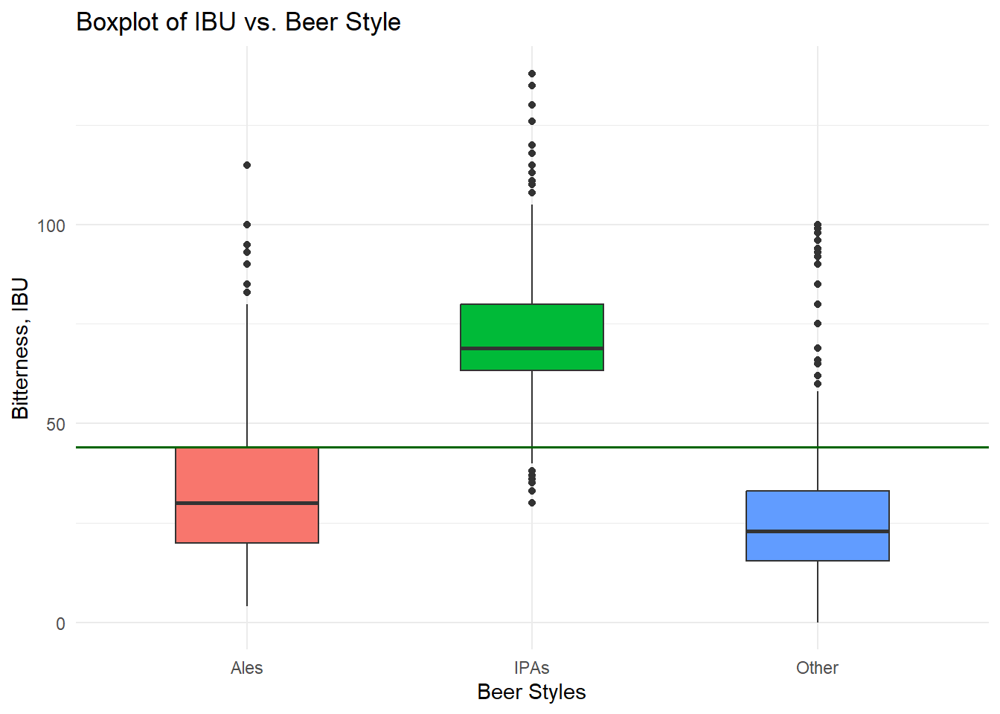
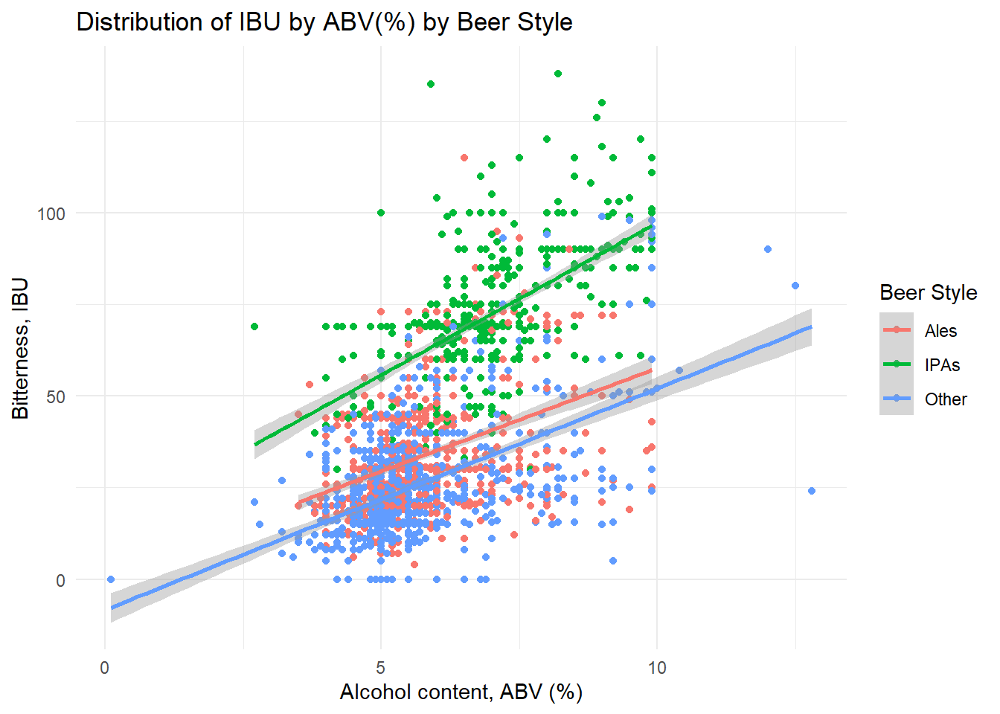
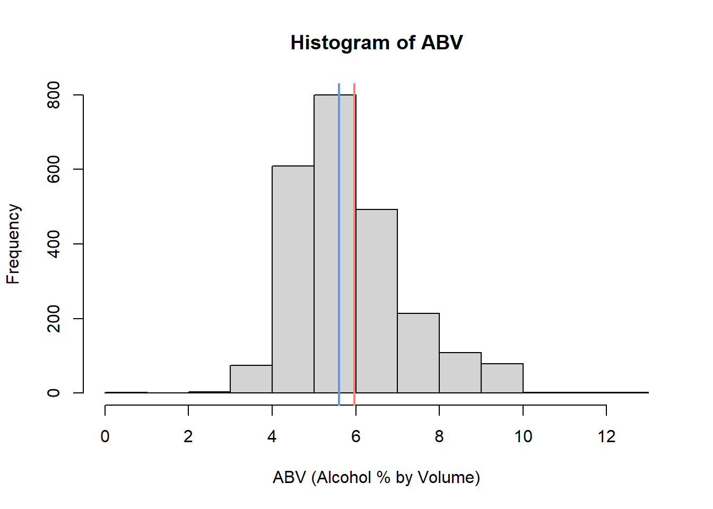
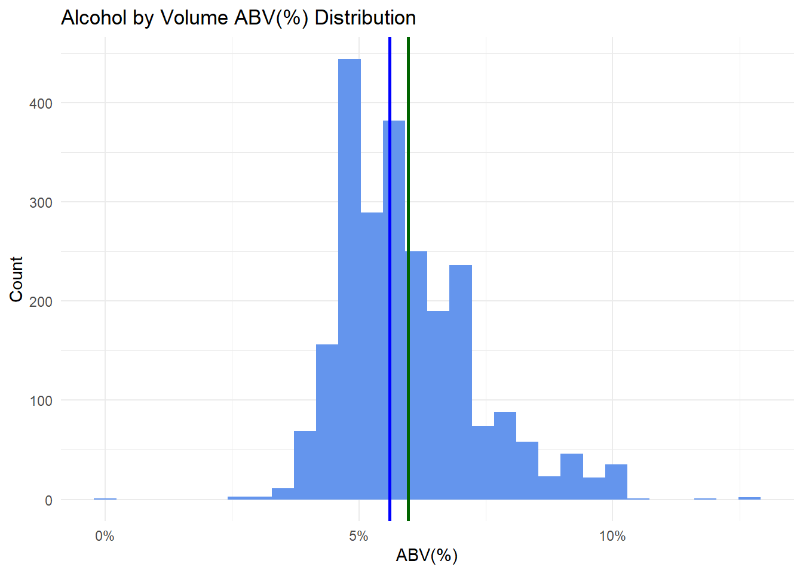

Case Study #1
Troy McSimov/Katon Pang
2023-10-29
Executive Summary
Budweiser provided our team with data and asked us to conduct a study on US craft beers and their breweries. In this document, we addressed questions that Budweiser had and reported any interesting findings.
1. The following addresses how many breweries are present in each state?
# Create a table of state counts
byState <- table(breweries$State)
# Convert the table to a data frame
byState_df <- as.data.frame(byState)
# Rename the columns and trim whitespace around state abbreviations
colnames(byState_df) <- c("abb", "Breweries")
byState_df$abb <- str_trim(byState_df$abb)
# Create a lookup table for state abbreviation to state name (and add DC as District of Columbia)
lookup = data.frame(abb = state.abb, State = state.name)
lookup <- rbind(lookup,data.frame(abb = "DC", State = "District of Columbia"))
# Add a new column with full state names to the data frame
byStateName <- merge(byState_df, lookup, by = "abb", all.x = TRUE)
# Create dataset with just State and Count of Breweries
subset_df <- byStateName[, c("State", "Breweries")]
# Order and plot number of breweries by State
subset_df$State <- factor(subset_df$State,
levels = subset_df$State[order(subset_df$Breweries, decreasing = TRUE)])
ggplot(subset_df, aes(x = State, y = Breweries)) +
geom_text(aes(label = Breweries), vjust = -0.5, size = 2.5) +
geom_bar(stat = "identity", fill = "Cornflower Blue") +
labs(y = "Number of Breweries", x = "State",
title = "Number of Breweries by State") +
theme_minimal() +
theme(axis.title.x=element_blank(),
axis.text.x=element_text(angle=90, vjust = 0.25, hjust=1)) # Vertical x-axis labels
2. Merge beer data with the breweries data. Print the first 6 observations and the last six observations to check the merged file.
# Rename beers$Brewery_id to beers$Brew_ID to make it easier to merge with brewery dataset
colnames(beers)[colnames(beers) == "Brewery_id"] <- "Brew_ID"
# Merge beers and breweries dataset on "Brew_ID" columns
brews <- left_join(beers, breweries, by = "Brew_ID")
# Data validation after merge
head(brews, n=6) # Looks okay## Name.x Beer_ID ABV IBU Brew_ID Style
## 1 Abbey's Single (2015- ) 2505 0.049 22 58 Abbey Single Ale
## 2 Abbey's Single Ale (Current) 1887 0.049 22 58 Abbey Single Ale
## 3 Alaskan Amber 1920 0.053 18 271 Altbier
## 4 Altus Bohemes Altbier 1597 0.053 NA 365 Altbier
## 5 Main St. Virginia Ale 2377 0.050 40 123 Altbier
## 6 Main St. Virginia Ale 1248 0.050 40 123 Altbier
## Ounces Name.y City State
## 1 12 Destihl Brewery Bloomington IL
## 2 12 Destihl Brewery Bloomington IL
## 3 12 Alaskan Brewing Company Juneau AK
## 4 12 Bohemian Brewery Midvale UT
## 5 12 Center of the Universe Brewing C... Ashland VA
## 6 12 Center of the Universe Brewing C... Ashland VAtail(brews, n=6) # Looks okay## Name.x Beer_ID ABV IBU Brew_ID Style
## 2405 Wild Onion Summer Wit 398 0.042 13 362 Witbier
## 2406 Special Release 2210 NA NA 30
## 2407 Kilt Lifter Scottish-Style Ale 1635 0.060 21 161 Scottish Ale
## 2408 OktoberFiesta 2527 0.053 27 67 Marzen
## 2409 The CROWLERâ„¢ 1796 NA 27 167
## 2410 CAN'D AID Foundation 1790 NA NA 167
## Ounces Name.y City State
## 2405 12 Wild Onion Brewing Company Lake Barrington IL
## 2406 16 Cedar Creek Brewery Seven Points TX
## 2407 12 Four Peaks Brewing Company Tempe AZ
## 2408 12 Freetail Brewing Company San Antonio TX
## 2409 32 Oskar Blues Brewery Longmont CO
## 2410 12 Oskar Blues Brewery Longmont CO3. Address the missing values in each column.
There were only 17 beers missing ABV after we updated the beers_updated_2.csv file with research done on the Internet (sources provided in Beers_analysis.xlsx). Because this is such a small number of beers, we have decided to remove these beers from the dataset. Along with this update, we also changed the missing IBU values to 0 for ‘Ciders’, ‘Low Alcohol Beer’, and ‘Shandys’ as they usually contain little to zero IBU.
For the remaining 944 beers with missing IBUs we took the median IBU for each Style of beer and used imputation to replace the missing values with the medians of the respective Style to preserve these records. Based on our research, each Style of beer had a narrow range of IBUs often seen in beers within that classification. For that reason we felt it necessary to take the median of each Style over the median of all beers seen in this dataset.
# There are only 17 beers missing ABV, these will be removed given the small amount
filtered_brews <- brews[!is.na(brews$ABV), ]
# Create dataset of just rows with null IBU to further investigate in correlation in these missing values
nulls <- filtered_brews[is.na(brews$IBU), ]
# Observe counts of unique values in each column to determine if any correlation might be identified of the 969 rows missing IBUs
#table(nulls['ABV']) # no correlation seen when compared to full dataset
#table(nulls['Ounces']) # no correlation seen when compared to full dataset
#table(nulls['Style']) # no correlation seen when compared to full dataset
#table(nulls['Name.y']) # no correlation seen when compared to full dataset
#table(nulls['City']) # no correlation seen when compared to full dataset
#table(nulls['State']) # no correlation seen when compared to full dataset
# Determine whether to use the median IBU of each Style or the median IBU of each State for imputing missing IBU values
# Get the mean of standard deviation for IBU values grouped by Style
style_stddev <- filtered_brews %>%
group_by(Style) %>%
summarise(std_dev = sd(IBU, na.rm = TRUE))
style_stddev_mean = mean(style_stddev$std_dev, na.rm = TRUE)
print(style_stddev_mean)## [1] 9.712063# Get the mean of standard deviation for IBU values grouped by State
state_stddev <- filtered_brews %>%
group_by(State) %>%
summarise(std_dev = sd(IBU, na.rm = TRUE))
state_stddev_mean = mean(state_stddev$std_dev, na.rm = TRUE)
print(state_stddev_mean)## [1] 25.78959# Get median IBU of each Style
IBU_lookup <- filtered_brews %>%
group_by(Style) %>%
summarise(
median_IBU_Style = median(IBU, na.rm = TRUE)
)
# Create new column in brews to include median IBU for each style
# Loop through each row in filtered_brews
for(i in 1:nrow(filtered_brews)){
if(is.na(filtered_brews$IBU[i])){
filtered_brews$IBU[i] <- IBU_lookup$median_IBU_Style[IBU_lookup$Style == filtered_brews$Style[i]]
}
}
# There are still 11 beers missing IBU due to no available median value for their particular class, these will be removed
filtered_brews <- filtered_brews[!is.na(filtered_brews$IBU), ]4. Compute the median alcohol content and international bitterness unit for each state. Plot a bar chart to compare.
# Get median of ABV and IBU by State
median_result <- filtered_brews %>%
group_by(State) %>%
summarise(
median_ABV = median(ABV, na.rm = TRUE),
median_IBU = median(IBU, na.rm = TRUE)
)
# Reorganize column names and merge State name into table
colnames(median_result) <- c("abb", "ABV", "IBU")
median_result$abb <- str_trim(median_result$abb)
median_result <- merge(median_result, lookup, by = "abb", all.x = TRUE)
median_result <- median_result[, c("State", "ABV", "IBU")]
# Find the row with the highest median ABV and IBU
ABV_row_number <- which(median_result$ABV == max(median_result$ABV))
IBU_row_number <- which(median_result$IBU == max(median_result$IBU))
# Print the result with the highest median ABV by State highlighted in yellow and the highest median IBU by State highlighted in pink
#knitr::kable(median_result, format="html", caption = "Median ABV and IBU by State") %>% #kable_styling(full_width = FALSE, position = "center", latex_options = "scale_down") %>% #row_spec(ABV_row_number, background = "yellow") %>% row_spec(IBU_row_number, background = "pink")
# Order and plot bar chart showing median ABV for each state order by ABV desc
median_result$State <- factor(median_result$State,
levels = median_result$State[order(median_result$ABV, decreasing = TRUE)])
ggplot(median_result, aes(x = State, y = ABV)) +
geom_text(aes(label = format(ABV*100, digits=2)), angle = 90, hjust = -0.25, size = 2.5) +
geom_bar(stat = "identity", fill = "Cornflower Blue") +
labs(y = "ABV", x = "State",
title = "Median Alcohol by Volume ABV(%) by State") +
theme_minimal() + scale_y_continuous(labels=percent, limits = c(0,0.07)) +
theme(axis.title.x=element_blank(), axis.title.y = element_text(angle = 0, vjust = 0.5),
axis.text.x=element_text(angle=90, vjust = 0.25, hjust=1))
# Order and plot bar chart showing median IBU for each state order by IBU desc
median_result$State <- factor(median_result$State,
levels = median_result$State[order(median_result$IBU, decreasing = TRUE)])
ggplot(median_result, aes(x = State, y = IBU)) +
geom_text(aes(label = format(IBU, digits=2)), vjust = -0.5, size = 2.5) +
geom_bar(stat = "identity", fill = "Cornflower Blue") +
labs(y = "IBU", x = "State",
title = "Median International Bitterness Units (IBU) by State") +
theme_minimal() +
theme(axis.title.x=element_blank(), axis.title.y = element_text(angle = 0, vjust = 0.5),
axis.text.x=element_text(angle=90, vjust = 0.25, hjust=1)) # Vertical x-axis labels
5. Which state has the maximum alcoholic (ABV) beer? Which state has the most bitter (IBU) beer?
Kentucky leads the States in the highest % alcohol content (ABV) of its beers on average, while West Virginia leads in bitterness (IBU). It is interesting to note that while West Virginia is in the top 5 for both ABV and IBU lists noted above, Kentucky is in the bottom half of the IBU list. While hops is often used to offset the taste for beers with a higher alcohol content, this does not appear to be the case in Kentucky.
max_ABV <- which(filtered_brews$ABV == max(filtered_brews$ABV))
max_IBU <- which(filtered_brews$IBU == max(filtered_brews$IBU))
filtered_brews[max_ABV, ]## Name.x Beer_ID ABV IBU
## 2172 Lee Hill Series Vol. 5 - Belgian Style Quadrupel Ale 2565 0.128 24
## Brew_ID Style Ounces Name.y City State
## 2172 52 Quadrupel (Quad) 19.2 Upslope Brewing Company Boulder COfiltered_brews[max_IBU, ]## Name.x Beer_ID ABV IBU Brew_ID
## 427 Bitter Bitch Imperial IPA 980 0.082 138 375
## Style Ounces Name.y City State
## 427 American Double / Imperial IPA 12 Astoria Brewing Company Astoria OR7. Is there an apparent relationship between the bitterness of the beer and its alcoholic content? Draw a scatter plot. Make your best judgment of a relationship and EXPLAIN your answer.
The amount of alcohol by volume in a beer does not explicitly increase the bitterness, however, adding more malt, and therefore more sugar, to beer to increase the amount of alcohol can offset the bitterness. Based on this dataset, there appears to be a relationship of ABV to IBU data showing the as the % of alcohol by volume seen, so do we see an increase in international bitterness units.
ggplot(data = filtered_brews, mapping = aes(x = ABV*100, y = IBU)) + geom_jitter(color="blue") + theme_pubclean() + xlab("Alcohol content, ABV (%)") + ylab ("Bitterness, IBU") + ggtitle ("Distribution of ABV(%) by IBU") + geom_smooth(method = "lm")## `geom_smooth()` using formula = 'y ~ x'
8. Budweiser would also like to investigate the difference with respect to IBU and ABV between IPAs (India Pale Ales) and other types of Ale (any beer with “Ale” in its name other than IPA).
# Break Styles into three classifications IPA's, non-IPAs, Ales, Other
filtered_brews$Style_Class <- ifelse(str_detect(filtered_brews$Style, "IPA"), "IPAs",
ifelse(str_detect(filtered_brews$Style, "Ale"), "Ales", "Other"))
# Verify the new variable
table(filtered_brews$Style_Class)##
## Ales IPAs Other
## 956 570 858ggplot(filtered_brews, aes(x = Style_Class)) +
geom_bar(fill = "Cornflower Blue") +
labs(x = "Style Class", y = "Count", title = "Distribution of Beer Styles") +
theme_minimal() +
theme(axis.text.x = element_text(angle = 45, hjust = 1))
##You decide to use KNN classification to investigate this relationship. Provide statistical evidence one way or the other. You can of course assume your audience is comfortable with percentages … KNN is very easy to understand conceptually. In addition, while you have decided to use KNN to investigate this relationship (KNN is required) you may also feel free to supplement your response to this question with any other methods or techniques you have learned. Creativity and alternative solutions are always encouraged.
set.seed(4) # Set seed
splitIndex <- createDataPartition(filtered_brews$Style_Class, p = .70, list = FALSE, times = 1)
train_data <- filtered_brews[ splitIndex,]
test_data <- filtered_brews[-splitIndex,]
predicted_style <- knn(train = train_data[,c("IBU", "ABV")],
test = test_data[,c("IBU", "ABV")],
cl = train_data$Style_Class,
k=5)
# Create confusion matrix
conf_matrix <- table(Predicted = predicted_style, Actual = test_data$Style_Class)
accuracy <- sum(diag(conf_matrix)) / sum(conf_matrix)
print(paste("Accuracy: ", round(accuracy * 100, 2), "%", sep=""))## [1] "Accuracy: 71.29%"ggplot(IBU_lookup, aes(x = Style, y = median_IBU_Style)) +
geom_text(aes(label = format(median_IBU_Style, digits=2)), vjust = -0.5, size = 2.5) +
geom_bar(stat = "identity", fill = "Cornflower Blue", width = 0.5) +
labs(y = "IBU", x = "State",
title = "Median International Bitterness Units (IBU) by Style") +
theme_minimal() +
theme(axis.title.x=element_blank(),
axis.text.x=element_text(angle=90, vjust = 0.25, hjust=1))## Warning: Removed 6 rows containing missing values (`position_stack()`).## Warning: Removed 6 rows containing missing values (`geom_text()`).
ggplot(data = filtered_brews, aes(x=Style_Class, y=ABV*100, fill = Style_Class)) + geom_boxplot(width = 0.5) + theme_minimal() + theme(legend.position = "none") + xlab("Beer Style") + ylab ("Alcohol content, ABV (%)") + ggtitle ("Boxplot of ABV(%) vs. Beer Style") + geom_hline(yintercept = 6, color = "dark green", size = 0.7) 
ggplot(data = filtered_brews, aes(x=Style_Class, y=IBU, fill = Style_Class)) + geom_boxplot(width = 0.5) + theme_minimal() + theme(legend.position = "none") + xlab("Beer Styles") + ylab ("Bitterness, IBU") + ggtitle ("Boxplot of IBU vs. Beer Style") + geom_hline(yintercept = 44, color = "dark green", size = 0.7)
ggplot(filtered_brews, aes(x=ABV*100, y=IBU, color=Style_Class)) + geom_point() + geom_smooth(method = "lm") + theme_minimal() + scale_color_discrete(name = "Beer Style") + xlab("Alcohol content, ABV (%)") + ylab ("Bitterness, IBU") + ggtitle ("Distribution of IBU by ABV(%) by Beer Style")## `geom_smooth()` using formula = 'y ~ x'
The correlation in the use of hops to increase bitterness with higher alcohol content seems to be a trend in most breweries across the United States, however, there were a couple states where the beers tended to have a higher alcohol content but we did not see the higher IBU values for these beers. There may be an opportunity to encourage and support local hops farmers in Kentucky by introducing more IPA’s across the state, which tend to have a higher IBU value.
sessionInfo()## R version 4.3.1 (2023-06-16 ucrt)
## Platform: x86_64-w64-mingw32/x64 (64-bit)
## Running under: Windows 11 x64 (build 22621)
##
## Matrix products: default
##
##
## locale:
## [1] LC_COLLATE=English_United States.utf8
## [2] LC_CTYPE=English_United States.utf8
## [3] LC_MONETARY=English_United States.utf8
## [4] LC_NUMERIC=C
## [5] LC_TIME=English_United States.utf8
##
## time zone: America/Chicago
## tzcode source: internal
##
## attached base packages:
## [1] stats graphics grDevices utils datasets methods base
##
## other attached packages:
## [1] class_7.3-22 caret_6.0-94 lattice_0.21-8 scales_1.2.1
## [5] kableExtra_1.3.4 knitr_1.43 corrr_0.4.4 ggpubr_0.6.0
## [9] ggplot2_3.4.3 stringr_1.5.0 dplyr_1.1.2
##
## loaded via a namespace (and not attached):
## [1] tidyselect_1.2.0 viridisLite_0.4.2 timeDate_4022.108
## [4] farver_2.1.1 fastmap_1.1.1 pROC_1.18.4
## [7] digest_0.6.33 rpart_4.1.19 timechange_0.2.0
## [10] lifecycle_1.0.3 survival_3.5-5 magrittr_2.0.3
## [13] compiler_4.3.1 rlang_1.1.1 sass_0.4.7
## [16] tools_4.3.1 utf8_1.2.3 yaml_2.3.7
## [19] data.table_1.14.8 ggsignif_0.6.4 labeling_0.4.2
## [22] plyr_1.8.8 xml2_1.3.5 abind_1.4-5
## [25] withr_2.5.0 purrr_1.0.2 stats4_4.3.1
## [28] nnet_7.3-19 grid_4.3.1 fansi_1.0.4
## [31] colorspace_2.1-0 future_1.33.0 globals_0.16.2
## [34] iterators_1.0.14 MASS_7.3-60 cli_3.6.1
## [37] crayon_1.5.2 rmarkdown_2.24 generics_0.1.3
## [40] rstudioapi_0.15.0 future.apply_1.11.0 reshape2_1.4.4
## [43] httr_1.4.7 cachem_1.0.8 splines_4.3.1
## [46] parallel_4.3.1 rvest_1.0.3 vctrs_0.6.3
## [49] hardhat_1.3.0 webshot_0.5.5 Matrix_1.6-1.1
## [52] jsonlite_1.8.7 carData_3.0-5 car_3.1-2
## [55] rstatix_0.7.2 listenv_0.9.0 systemfonts_1.0.4
## [58] foreach_1.5.2 gower_1.0.1 tidyr_1.3.0
## [61] jquerylib_0.1.4 recipes_1.0.8 parallelly_1.36.0
## [64] glue_1.6.2 codetools_0.2-19 lubridate_1.9.2
## [67] stringi_1.7.12 gtable_0.3.4 munsell_0.5.0
## [70] tibble_3.2.1 pillar_1.9.0 htmltools_0.5.6
## [73] ipred_0.9-14 lava_1.7.2.1 R6_2.5.1
## [76] evaluate_0.21 highr_0.10 backports_1.4.1
## [79] broom_1.0.5 bslib_0.5.1 Rcpp_1.0.11
## [82] svglite_2.1.1 nlme_3.1-162 prodlim_2023.08.28
## [85] mgcv_1.8-42 xfun_0.40 ModelMetrics_1.2.2.2
## [88] pkgconfig_2.0.3
6. Comment on the summary statistics and distribution of the ABV variable.
The ABV data appears to have a normal distribution with a slight right skewness.

